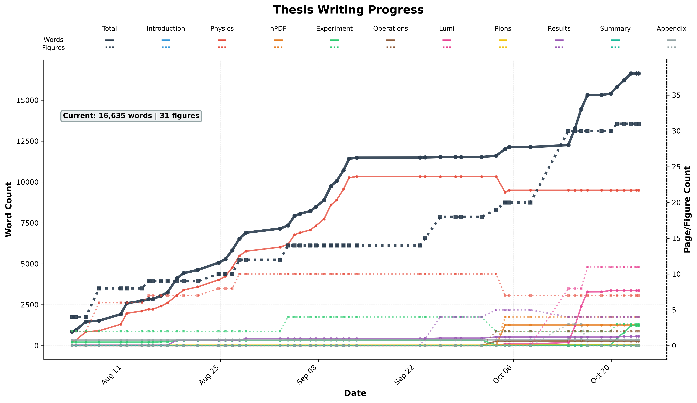

Thesis in progress
Research in motion
The long road to “submitted”
One word closer.
Words, figures, and small victories. A thesis taking shape.

A brief intermission.The progress plot is taking a coffee break. We’ll try again automatically.